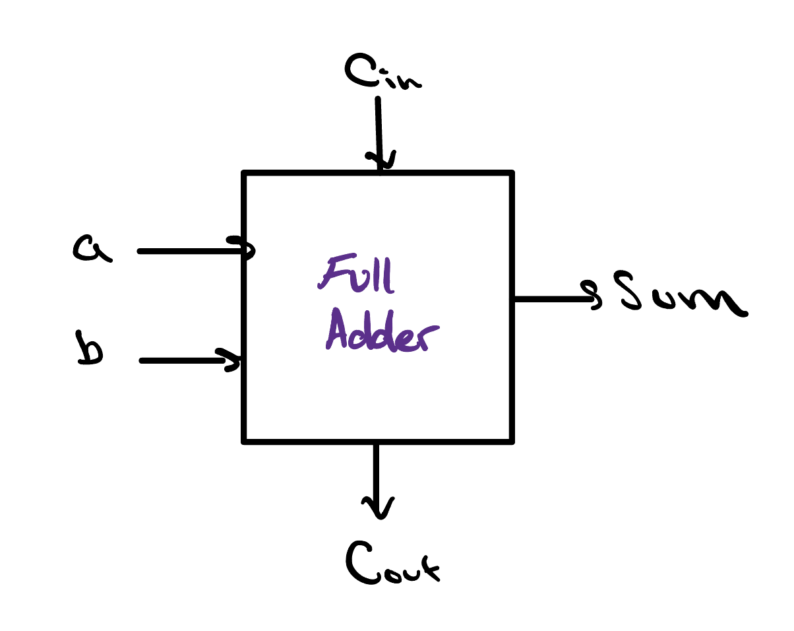
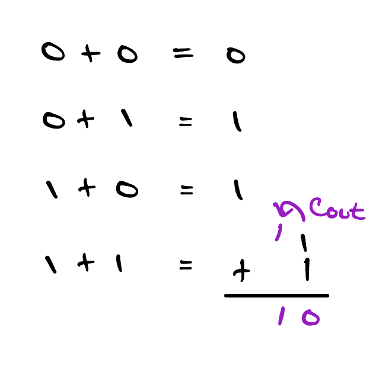
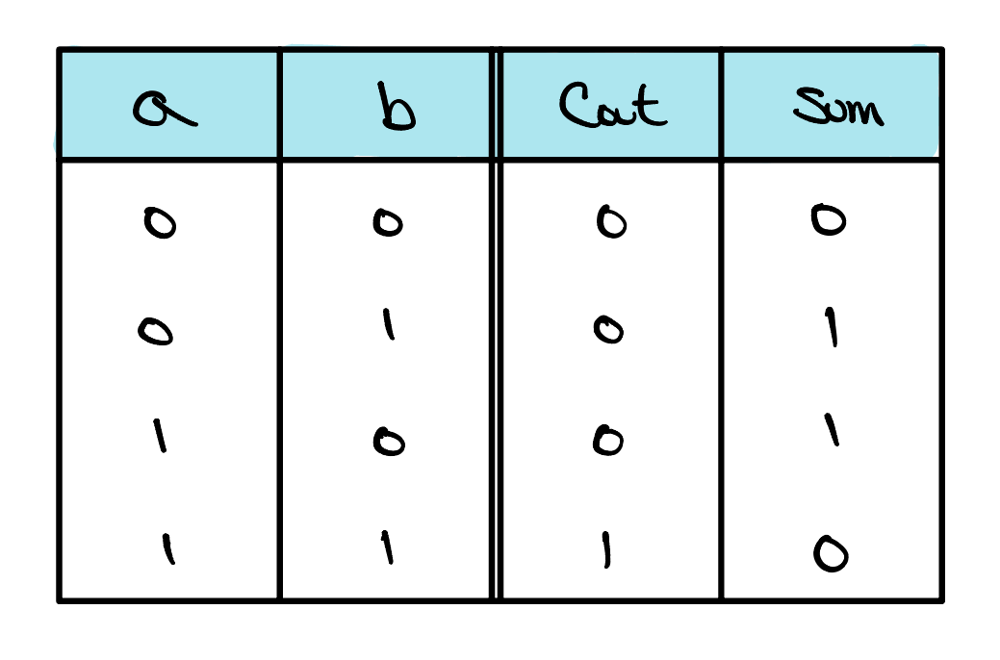
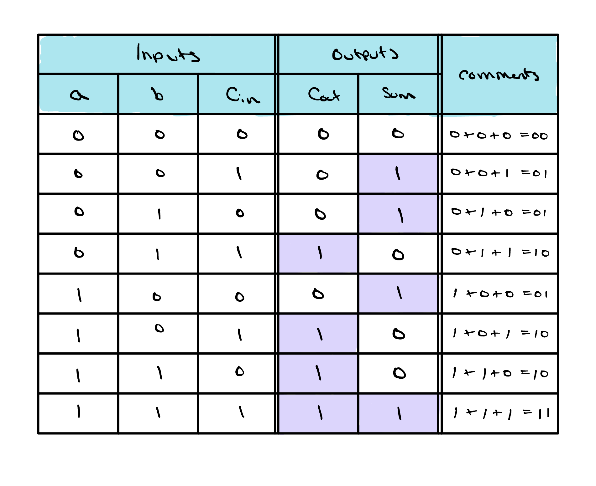
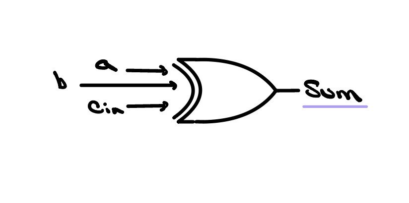
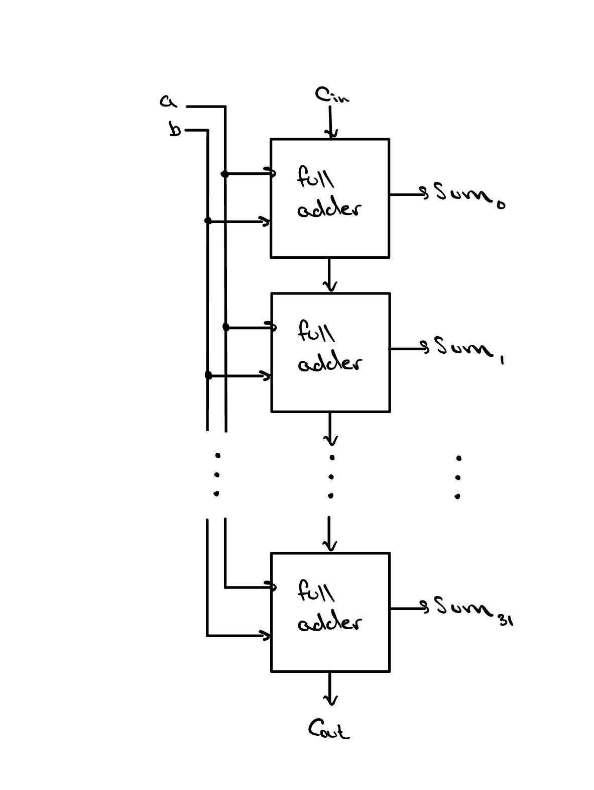

The Full Adder and Ripple Carry Adder
A single gate makes one decision, but arithmetic needs gates working together. The full adder is the smallest circuit that can really add, and if we string multiple of them together, we can add numbers of any size.

Binary Addition

Adding two bits in binary works exactly like adding two digits in the base-10 number system — also called the decimal number system — that you already know. Start with the smallest cases: 0 + 0 = 0, 0 + 1 = 1, and 1 + 0 = 1.
The interesting one is 1 + 1, which equals 2. The only problem is that we need two bits to represent 2 in binary — so 1 + 1 = 10! If you look closely at our answer, the bit we started with actually turned into a 0, and we “carried” a 1 to the left by one position.
Just like in decimal, binary addition requires carrying bits. In fact, each time we add two input bits we actually get two output bits: the sum of our two input bits, and a carry into the next most significant bit.
The table at right illustrates the different results we could get
from adding two bits. As expected, Cout is
only 1 when both a and b are
1, because this is the only combination where adding
the two bits would result in an answer that we cannot fit in just
one bit.

Cout and Sum for each
input combination of a and b.
The Full Adder
Believe it or not, we are now just one step away from the makings of a
full adder. If you think back to how addition is performed by hand,
each time we exceed the decimal value of 1 we must carry a 1 to the
next bit. We called this the Cout of our bit
— but from the perspective of the bit it carries into, what
should we call it?
With each bit having a Cout, it only makes
sense that each bit should also have a Cin,
because the Cout of one bit is by definition
the Cin of the next bit. Each of a, b, and
Cin are inputs to our full adder, and are
summed together to produce both the Sum and the
Cout that we then pass on to the next bit.
Since we now have three inputs to our full adder, we can update our truth table to now have 8 different input combinations. The updated truth table is below.

We can use the truth table to create what are called
logic expressions for both of our outputs,
Sum and Cout. A logic
expression will always describe an output purely in terms of its
inputs, combining them with the logic gates — AND, OR, NOT,
and XOR — that we met last lesson. For example, if you look
closely at the truth table, the output Sum is only ever
1 when an odd number of the input bits are
1. This is precisely the XOR
functionality we learned last lesson! Therefore, we can write the
logic expression for Sum as
Sum = a ⊕ b ⊕ Cin and draw the
circuit as follows.

Sum: a three-input XOR of
a, b, and Cin.
The Ripple Carry Adder
Naturally, the next step is adding numbers with multiple bits. The good news is that this isn't hard at all, so long as we remember to include the carry-out from the previous bit when we add the next one. With some careful thinking, you might reason that to add multiple bits, the carry-out of the previous bit has to become the carry-in of the next bit. And you'd be right!
To add multiple bits, we must chain multiple full adders
together, connecting each bit's Cout to the
next bit's Cin. This chain is often referred
to as a ripple carry adder, and it is the backbone
of our ALU design.
Remarkably, this same circuit can subtract with only a tiny
tweak. Recall that in two's complement, negating a number means
flipping all its bits and adding 1 — so
a − b is just
a + b + 1. To pull this off, we feed each bit of
b through an XOR gate controlled by a single
subtract signal: when it's 0 the bits pass through
untouched (plain addition), and when it's 1 every bit of
b is inverted. Wiring that same subtract signal into the
very first Cin supplies the “+ 1”,
and just like that our adder becomes an
adder–subtractor.


A Word on Overflow
Because our adder is built from a fixed number of bits, some sums simply have no room to land. Adding two large numbers can produce a result too big for the available bits, and the extra information spills off the top. This is called overflow, and if we don't catch it, the answer we read back will be flat-out wrong.
The good news is that overflow is cheap to detect. For
unsigned numbers it's simple: if the final
Cout — the carry off the most significant
bit — is 1, the sum didn't fit, and overflow has occurred. For
signed (two's complement) numbers the tell-tale sign is
different: overflow happens exactly when we add two numbers of the
same sign and get a result of the opposite sign
(two positives yielding a negative, or two negatives yielding a
positive).
Hardware has an even slicker trick. It compares the carry
into the most significant bit with the carry out of
it: if those two carries differ, signed overflow has occurred. In other
words, a single XOR gate on those two carry bits,
ovf = Cin ⊕ Cout at the top bit,
gives us an overflow flag essentially for free —
one of several status flags a real ALU hands back alongside the result.
Check Yourself
Given the truth table below, what would be the logic expression for Cout?